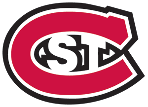
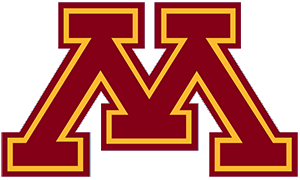

WCHA
Wisconsin
Wisconsin is 6-2-0 and 12th in the NPI. Across 500 simulated seasons its median NPI finish is 2nd, with a 95% range of 1st to 6th. ELO expects about 9 wins in the next 10.
Next 10 games
- Fri, Oct 30

at St. Cloud State80% - Sat, Oct 31at St. Cloud State80%
- Sat, Nov 14vs St. Thomas95%
- Sun, Nov 15vs St. Thomas95%
- Sat, Nov 21vs Bemidji State98%
- Sun, Nov 22vs Bemidji State98%
- Sat, Nov 28vs Union94%
- Sun, Nov 29vs Union94%
- Fri, Dec 4

at Minnesota65% - Sat, Dec 5at Minnesota65%
Win chances from ELO; the dot is stronger the more lopsided the game.
Projected NPI finish
500 simulated seasons, remaining games decided by ELO win chances. Dashed line: median. Shaded: 95% range.